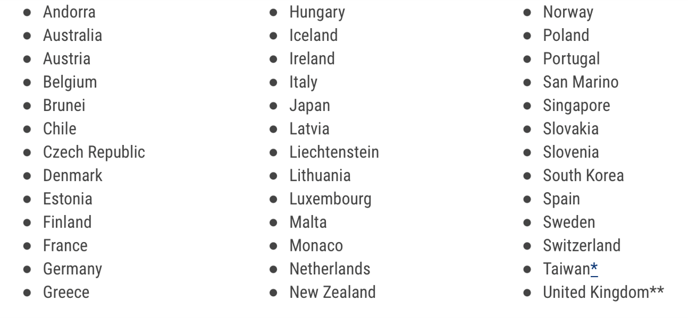

Visa Information
Visitor Visa to the U.S. :
- Citizens or nationals not participating countries to the visa waiver program, must obtain a Business (B-1) visa to "Attend a scientific, educational, professional, or business convention or conference".
- There are several steps to apply for a visa. The order of these steps and how you complete them may vary by U.S. Embassy or Consulate. Please consult the instructions on the U.S. Embassy or Consulate website.
- Complete the Online Visa Application :
- Online Nonimmigrant Visa Application, Form DS-160 -
Learn more
about completing the DS-160. You must:
- Complete the online visa application
- Print the application form confirmation page to bring to your interview.
- Photo - You will upload your photo while completing the online Form DS-160. Your photo must be in the format explained in the Photograph Requirements.
- Online Nonimmigrant Visa Application, Form DS-160 -
Learn more
about completing the DS-160. You must:
- For more information: travel.state.gov/content/travel/en/us-visas/tourism-visit/visitor.html#apply
Note: If needed, a visa letter can be provided to assist with your visa application to attend ISMICT 2023. For more information, please contact Massimiliano Pierobon.
The Visa Waiver Program :
-
The Visa Waiver Program (VWP) enables most citizens or nationals of participating countries* to travel to the United States for tourism or business for stays of 90 days or less without obtaining a visa. Travelers must have a valid Electronic System for Travel Authorization (ESTA) approval prior to travel and meet all requirements explained below.
 - For more information: travel.state.gov/content/travel/en/us-visas/tourism-visit/visa-waiver-program.html